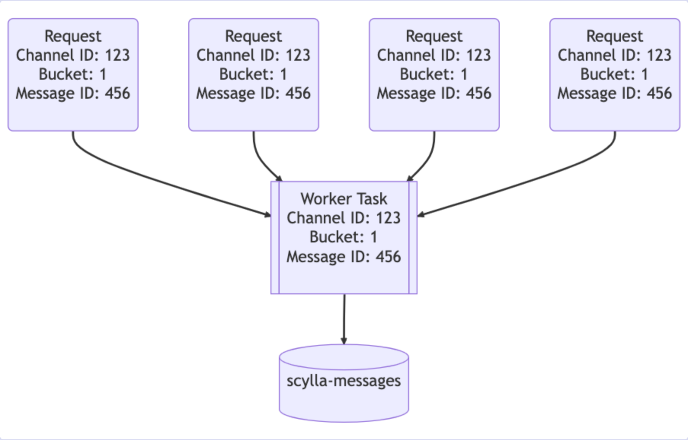
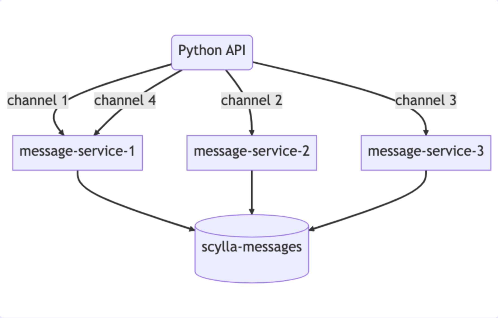

01 / 12
디스코드는 메시지 저장 구조와 DB를 어떻게 선택했을까?
MongoDBCassandraScyllaDB
02 / 12
2015년, 빠르게 만들기 위한 MongoDB 선택
출발점
빠른 개발에 적합한 MongoDB
단일 복제 세트로 시작
메시지를 찾는 기준
channel_id + created_at
채널과 작성 시각의 복합 인덱스
Discord · 2017년 기술 글
03 / 12
약 1억 건이 쌓이자, 지연이 불안정해졌다
메시지 증가
→데이터·인덱스가
메모리를 넘어섬
→예측하기 어려운
조회 지연
디스코드의 당시 구성에서, 커진 데이터를 안정적으로 처리할 다음 선택이 필요했다.
Discord · 2017년 기술 글
04 / 12
사용자들은 같은 메시지를 같은 방식으로 읽지 않았다
작은 음성 중심 그룹
메시지가 드묾
오래된 기록도 조회
소규모 비공개 그룹
최근 기록을 읽지만
이용자가 적어 반복 조회는 적음
큰 공개 커뮤니티
최근 기록을
많은 사람이 반복 조회
최신 메시지라고 해서 자주 읽히는 데이터인 것은 아니다.
Discord · 2017년 기술 글
05 / 12
다음 선택: Cassandra에 기대한 것
노드 추가로 확장
커지는 저장량과 요청 처리
자동 장애 전환
서버 장애에 대응
예측 가능한 성능
안정적인 응답 시간
낮은 유지보수 부담
운영자의 반복 개입 줄이기
Discord · 2017년 기술 글
06 / 12
저장 구조: 채널 + 기간으로 묶고, ID로 정렬
channel_id어느 채널인가?
＋bucket어느 기간인가?
→파티션함께 저장할 메시지 묶음
PRIMARY KEY ((channel_id, bucket), message_id)
└──── 파티션 키 ────┘ └ 정렬 키 ┘
채널 전체가 계속 커지는 대신 기간으로 나눈다.
파티션 안에서는 시간순 Snowflake ID로 정렬한다.
Discord · 2017년 기술 글
07 / 12
읽는 방법도 저장 구조를 따라간다
-- Cassandra 조회 예시 · CQL
SELECT * FROM messages
WHERE channel_id = 'study' AND bucket = :current_bucket
ORDER BY message_id DESC
LIMIT 50;
현재 기간최신 기록부터
→이전 기간더 필요하면
→더 이전 기간과거로 이어 읽기
Discord · 2017년 기술 글
08 / 12
Cassandra에서도 운영 문제가 쌓였다
핫 파티션
특정 메시지 구역에
조회가 집중
GC 정지
메모리를 정리하며
요청 처리가 멈추는 시간
컴팩션 지연
저장 파일의 병합·정리 작업이
밀리는 문제
지연과 수동 대응 부담이 다음 저장소를 검토하는 이유가 됐다.
Discord · 2023년 기술 글
09 / 12
2022년 5월, ScyllaDB로 전환
Cassandra 호환
기존 질의·저장 구조를
이어갈 수 있는 선택
C++ 구현
JVM의 GC 정지 부담 제거
코어별 작업 분리
shard-per-core 구조로
자원 경합을 줄이는 방향
DB 엔진을 바꾸면서, 요청이 몰리는 경로도 함께 개선했다.
Discord · 2023년 기술 글
10 / 12
DB 앞에서, 중복 요청을 줄였다
요청 병합 · coalescing

같은 행의 동시 요청을 하나로 묶는다.채널 기준 라우팅

같은 채널은 같은 인스턴스로 보낸다.전환 준비 중 도입한 Rust 데이터 서비스에서 같은 행의 동시 조회를 병합한다.
이미지: 디스코드 공식 도식 캡처 · Discord · 2023년 기술 글
11 / 12
옮기는 동안에도 데이터가 맞는지 검증했다
새 메시지양쪽에 쓰기
＋과거 기록기존 데이터 이관
→표본 조회 비교응답 일치 확인
→조회 전환새 저장소 사용
새로 들어오는 데이터와 이미 쌓인 기록을 함께 옮긴다.
Discord · 2023년 기술 글
12 / 12
처음의 선택을, 커진 서비스에 맞춰 바꿔갔다
MongoDB
빠른 개발로 시작
커진 데이터에서 지연 문제
Cassandra
확장과 자동화 기대
핫 파티션·운영 부담 경험
ScyllaDB
호환성을 유지하며 이전
데이터 서비스도 개선
과거 메시지 조회 p99: 40~125ms → 약 15ms
2023년 글에 보고된 전환 전후 운영 결과.
Discord · 2017년 기술 글
Discord · 2023년 기술 글